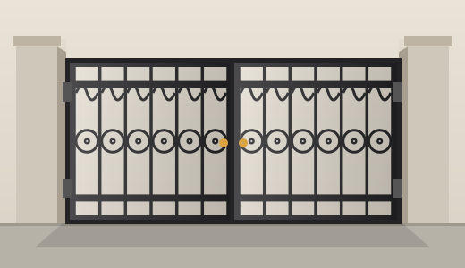
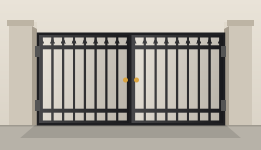
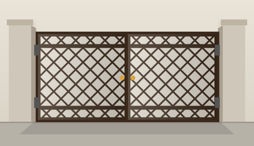
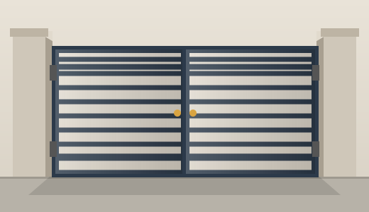

Enter your preferences, preview an interactive 3D gate, get design suggestions and a transparent cost estimate, then track your order online.

Every stage change sends an automatic email to the customer.
Visualize type, material, color and pattern.
Recommended styles for your size and taste.
Automatic material list and baseline cost.
Online dashboard and email updates.

Vertical bar swing gate

Lattice swing gate

Horizontal slat gate
Ornamental scroll gate
Create an account and submit an inquiry with your gate preferences.